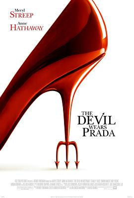

穿普拉达的女王 / The Devil Wears Prada
又名：时尚女魔头 / 穿Prada的恶魔(港) / 穿着Prada的恶魔(台) / 穿普拉达的女魔头
作品信息
| 导演 | 大卫·弗兰科尔 |
| 编剧 | 艾莲·布洛什·麦肯纳 / 劳伦·魏丝伯格 |
| 主演 | 梅丽尔·斯特里普 / 安妮·海瑟薇 / 艾米莉·布朗特 / 斯坦利·图齐 / 西蒙·贝克 / 艾德里安·格尼尔 / 翠茜·索姆斯 / 里奇·索莫 / 丹尼尔·逊亚塔 / 大卫·马歇尔·格兰特 / 詹姆斯·诺顿 / 蒂波·费德曼 / 丽贝卡·麦德 / 吉梅娜·霍约斯 / 吉赛尔·邦辰 / 乔治·乌尔夫 / 约翰·罗斯曼 / 斯特芬妮·斯佐斯塔克 / 科琳·丹吉尔 / 苏赞妮·丹吉尔 |
| 类型 | 剧情 / 喜剧 |
| 制片国家/地区 | 美国 / 法国 |
| 语言 | 英语 / 法语 |
| 上映日期 | 2007-02-27(中国大陆) / 2006-06-30(美国) |
| 片长 | 109分钟 |
| IMDb | tt0458352 |
最后一次看到是 2026-08-12T21:13:25+08:00 · 豆瓣原页